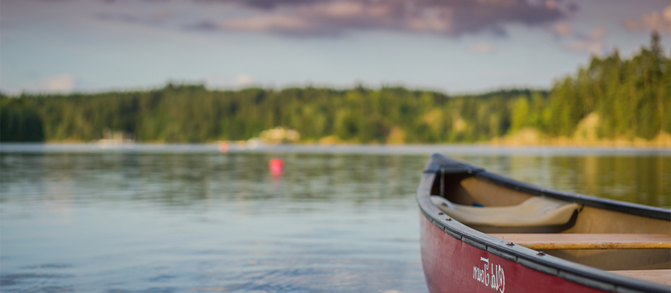
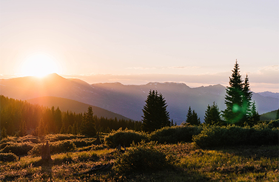
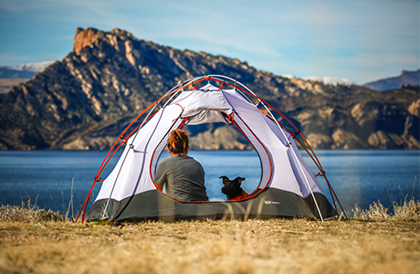
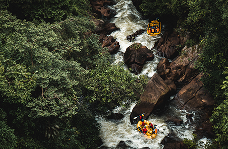
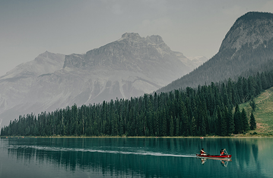

Adventures off
the Beaten Path
It's time to explore your path. Where will you go?
Popular articles

Hiking
Trek along the edges of a glacier, through wildflower-filled valleys, meandering streams,
and admire the turquoise blue glacier-fed lakes. This is hiking in the Rockies where there
are countless places to roam and an endless tangle of trails.

Camping
There’s nothing quite like camping among stunning ancient mountain tops and feeling like
you’re one with nature. Take a ride through breathtaking blue lakes, go for quiet walks in
the forest, or go bird watching to truly get away from it all.

Rafting
Experience an exhilarating adventure of a lifetime in a spectacular wilderness setting.
Hanging glaciers, snow-capped mountains, cascading waterfalls, and beautiful blue waters
are all part of the scenery along this adrenaline-inducing ride.

Fishing
The glassy stillness of the lake, the bright early mornings, and the cool breeze coming
off the water. The solitude of you, your friends and the fish. Just when you think it
can’tget better than this, you catch a glimpse of the surroundings.